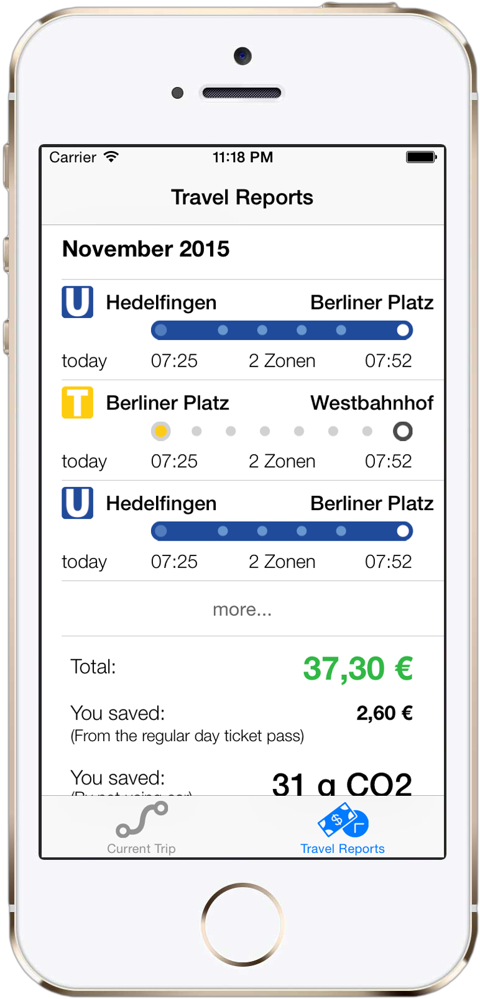

How can we revolutionize the use of global public transportion?
Current solutions still don't think big and are still too complex.
1. Resource exhausting requirements like WIFI, GPS, Camera or Internet. 2. Not scalable for all transportation vehicles like airplanes, taxis and trams. 3. No TOUCHLESS interaction.


Imagine...
You would never buy tickets anymore
Check-in and check-out are handled by bluetooth sensors


No user interaction, no requirements for internet, GPS, or NFC.
Imagine the app would automatically optimize your ticket fees

And this solution we call...
TouchlessTravel
no touch only travel